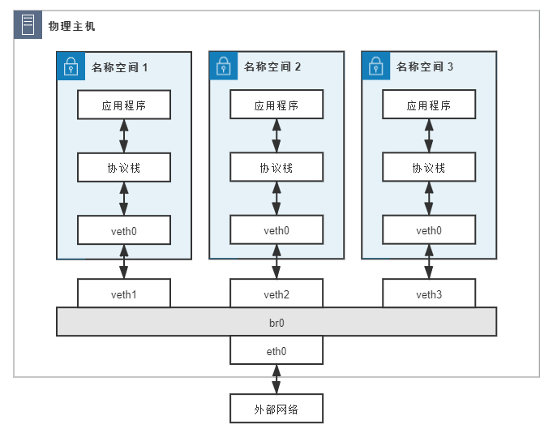

- 00 _导读 _ 什么是“The Fenix Project”？.md.html
- 00 开篇词 _ 如何构建一个可靠的分布式系统？.md.html
- 01 _ 原始分布式时代：Unix设计哲学下的服务探索.md.html
- 02 _ 单体系统时代：应用最广泛的架构风格.md.html
- 03 _ SOA时代：成功理论与失败实践.md.html
- 04 _ 微服务时代：SOA的革命者.md.html
- 05 _ 后微服务时代：跨越软件与硬件之间的界限.md.html
- 06 _ 无服务时代：“不分布式”云端系统的起点.md.html
- 07 _ 远程服务调用（上）：从本地方法到远程方法的桥梁.md.html
- 08 _ 远程服务调用（下）：如何选择适合自己的RPC框架？.md.html
- 09 _ RESTful服务（上）：从面向过程编程到面向资源编程.md.html
- 10 _ RESTful服务（下）：如何评价服务是否RESTful？.md.html
- 11 _ 本地事务如何实现原子性和持久性？.md.html
- 12 _ 本地事务如何实现隔离性？.md.html
- 13 _ 全局事务和共享事务是如何实现的？.md.html
- 14 _ 分布式事务之可靠消息队列.md.html
- 15 _ 分布式事务之TCC与SAGA.md.html
- 16 _ 域名解析系统，优化HTTP性能的第一步.md.html
- 17 _ 客户端缓存是如何帮助服务器分担流量的？.md.html
- 18 _ 传输链路，优化HTTP传输速度的小技巧.md.html
- 19 _ 如何利用内容分发网络来提高网络性能？.md.html
- 20 _ 常见的四层负载均衡的工作模式是怎样的？.md.html
- 21 _ 服务端缓存的三种属性.md.html
- 22 _ 分布式缓存如何与本地缓存配合，提高系统性能？.md.html
- 23 _ 认证：系统如何正确分辨操作用户的真实身份？.md.html
- 24 _ 授权（上）：系统如何确保授权的过程可靠？.md.html
- 25 _ 授权（下）：系统如何确保授权的结果可控？.md.html
- 26 _ 凭证：系统如何保证与用户之间的承诺是准确完整且不可抵赖的？.md.html
- 27 _ 保密：系统如何保证敏感数据无法被内外部人员窃取滥用？.md.html
- 28 _ 传输（上）：传输安全的基础，摘要、加密与签名.md.html
- 29 _ 传输（下）：数字证书与传输安全层.md.html
- 30 _ 验证：系统如何确保提交给服务的数据是安全的？.md.html
- 31 _ 分布式共识（上）：想用好分布式框架，先学会Paxos算法吧.md.html
- 32 _ 分布式共识（下）：Multi Paxos、Raft与Gossip，分布式领域的基石.md.html
- 33 _ 服务发现如何做到持续维护服务地址在动态运维中的时效性？.md.html
- 34 _ 路由凭什么作为微服务网关的基础职能？.md.html
- 35 _ 如何在客户端实现服务的负载均衡？.md.html
- 36 _ 面对程序故障，我们该做些什么？.md.html
- 37 _ 要实现某种容错策略，我们该怎么做？.md.html
- 38 _ 限流的目标与模式.md.html
- 39 _ 如何构建零信任网络安全？.md.html
- 40 _ 如何实现零信任网络下安全的服务访问？.md.html
- 41 _ 分布式架构中的可观测到底说的是什么？.md.html
- 42 _ 分析日志真的没那么简单.md.html
- 43 _ 一个完整的分布式追踪系统是什么样子的？.md.html
- 44 _ 聚合度量能给我们解决什么问题？.md.html
- 45 _ 模块导学：从微服务到云原生.md.html
- 46 _ 容器的崛起（上）：文件、访问、资源的隔离.md.html
- 47 _ 容器的崛起（下）：系统、应用、集群的封装.md.html
- 48 _ 以容器构建系统（上）：隔离与协作.md.html
- 49 _ 以容器构建系统（下）：韧性与弹性.md.html
- 50 _ 应用为中心的封装（上）：Kustomize与Helm.md.html
- 51 _ 应用为中心的封装（下）：Operator与OAM.md.html
- 52 _ Linux网络虚拟化（上）：信息是如何通过网络传输被另一个程序接收到的？.md.html
- 53 _ Linux网络虚拟化（下）：Docker所提供的容器通讯方案有哪些？.md.html
- 54 _ 容器网络与生态：与CNM竞争过后的CNI下的网络插件生态.md.html
- 55 _ 谈谈Kubernetes的存储设计理念.md.html
- 56 _ Kubernetes存储扩展架构：一个真实的存储系统如何接入或移除新存储设备？.md.html
- 57 _ Kubernetes存储生态系统：几种有代表性的CSI存储插件的实现.md.html
- 58 _ Kubernetes的资源模型与调度器设计.md.html
- 59 _ 透明通讯的涅槃（上）：通讯的成本.md.html
- 60 _ 透明通讯的涅槃（下）：控制平面与数据平面.md.html
- 61 _ 服务网格与生态：聊聊服务网格的两项标准规范.md.html
- 62 _ Fenix's Bookstore的前端工程.md.html
- 63 _ 基于Spring Boot的单体架构.md.html
- 64 _ 基于Spring Cloud的微服务架构.md.html
- 65 _ 基于Kubernetes的微服务架构.md.html
- 66 _ 基于Istio的服务网格架构.md.html
- 67 _ 基于云计算的无服务架构.md.html
- 春节特别放送（上）_ 有的放矢，事半功倍.md.html
- 春节特别放送（下）_ 积累沉淀，知行合一.md.html
- 用户故事 _ 詹应达：持续成长，不惧未来.md.html
- 结束语 _ 程序员之路.md.html
- 结课测试 _ 一套习题，测出你的掌握程度.md.html
- 捐赠
53 _ Linux网络虚拟化（下）：Docker所提供的容器通讯方案有哪些？
你好，我是周志明。今天我们接着上节课介绍的Linux网络知识，继续来学习它们在虚拟化网络方面的应用，从而为后续学习容器编排系统、理解各个容器是如何通过虚拟化网络来协同工作打好基础。
虚拟化网络设备
首先我们要知道，虚拟化网络并不需要完全遵照物理网络的样子来设计。不过，由于现在大量现成的代码，原来就是面向于物理存在的网络设备来编码实现的，另外也有出于方便理解和知识继承方面的考虑，因此虚拟化网络与物理网络中的设备还是具有相当高的相似性。
所以接下来，我就会从网络中那些与网卡、交换机、路由器等对应的虚拟设施，以及如何使用这些虚拟设施来组成网络入手，给你介绍容器间网络的通信基础设施。
好了，我们开始吧。
网卡：tun/tap、veth
首先是虚拟网卡设备。
目前主流的虚拟网卡方案有tun/tap和veth两种，其中tun/tap出现得时间更早，它是一组通用的虚拟驱动程序包，里面包含了两个设备，分别是用于网络数据包处理的虚拟网卡驱动，以及用于内核空间与用户空间交互的字符设备（Character Devices，这里具体指/dev/net/tun）驱动。
大概在2000年左右，Solaris系统为了实现隧道协议（Tunneling Protocol）开发了这套驱动，从Linux Kernel 2.1版开始，tun/tap移植到了Linux内核中，当时它是作为源码中的可选模块，而在2.4版之后发布的内核，都会默认编译tun/tap的驱动。tun和tap是两个相对独立的虚拟网络设备，其中tap模拟了以太网设备，操作二层数据包（以太帧），tun则是模拟了网络层设备，操作三层数据包（IP报文）。
那么，使用tun/tap设备的目的，其实是为了把来自协议栈的数据包，先交给某个打开了/dev/net/tun字符设备的用户进程处理后，再把数据包重新发回到链路中。这里你可以通俗地理解为，这块虚拟化网卡驱动一端连接着网络协议栈，另一端连接着用户态程序，而普通的网卡驱动则是一端连接着网络协议栈，另一端连接着物理网卡。
如此一来，只要协议栈中的数据包能被用户态程序截获并加工处理，程序员就有足够的舞台空间去玩出各种花样，比如数据压缩、流量加密、透明代理等功能，都能够在此基础上实现。
这里我就以最典型的VPN应用程序为例，程序发送给tun设备的数据包，会经过如下所示的顺序流进VPN程序：

应用程序通过tun设备对外发送数据包后，tun设备如果发现另一端的字符设备已经被VPN程序打开（这就是一端连接着网络协议栈，另一端连接着用户态程序），就会把数据包通过字符设备发送给VPN程序，VPN收到数据包，会修改后再重新封装成新报文，比如数据包原本是发送给A地址的，VPN把整个包进行加密，然后作为报文体，封装到另一个发送给B地址的新数据包当中。
这种把一个数据包套进另一个数据包中的处理方式，就被形象地形容为“隧道”（Tunneling），隧道技术是在物理网络中构筑逻辑网络的经典做法。而其中提到的加密，实际上也有标准的协议可以遵循，比如IPSec协议。
不过，使用tun/tap设备来传输数据需要经过两次协议栈，所以会不可避免地产生一定的性能损耗，因而如果条件允许，容器对容器的直接通信并不会把tun/tap作为首选方案，而是一般基于veth来实现的。
但tun/tap并没有像veth那样，有要求设备成对出现、数据要原样传输的限制，数据包到了用户态程序后，我们就有完全掌控的权力，要进行哪些修改、要发送到什么地方，都可以通过编写代码去实现，所以tun/tap方案比起veth方案有更广泛的适用范围。
那么这里我提到的veth，就是另一种主流的虚拟网卡方案了，在Linux Kernel 2.6版本，Linux开始支持网络名空间隔离的同时，也提供了专门的虚拟以太网（Virtual Ethernet，习惯简写为veth），让两个隔离的网络名称空间之间可以互相通信。
其实，直接把veth比喻成虚拟网卡并不是很准确，如果要和物理设备类比，它应该相当于由交叉网线连接的一对物理网卡。
额外知识：直连线序、交叉线序- 交叉网线是指一头是T568A标准，另外一头是T568B标准的网线。直连网线则是两头采用同一种标准的网线。- 网卡对网卡这样的同类设备，需要使用交叉线序的网线来连接，网卡到交换机、路由器就采用直连线序的网线，不过现在的网卡大多带有线序翻转功能，直连线也可以网卡对网卡地连通了。
veth实际上也不是一个设备，而是一对设备，因而它也常被称作veth pair。我们要使用veth，就必须在两个独立的网络名称空间中进行才有意义，因为veth pair是一端连着协议栈，另一端彼此相连的，在veth设备的其中一端输入数据，这些数据就会从设备的另一端原样不动地流出，它在工作时的数据流动如下图所示：

由于两个容器之间采用veth通信，不需要反复多次经过网络协议栈，这就让veth比起tap/tun来说，具备了更好的性能，也让veth pair的实现变得十分简单，内核中只用几十行代码实现一个数据复制函数，就可以完成veth的主体功能。
不过veth其实也存在局限性。
虽然veth以模拟网卡直连的方式，很好地解决了两个容器之间的通信问题，然而对多个容器间通信，如果仍然单纯只用veth pair的话，事情就会变得非常麻烦，毕竟，让每个容器都为与它通信的其他容器建立一对专用的veth pair，根本就不实际，真正做起来成本会很高。
因此这时，就迫切需要有一台虚拟化的交换机，来解决多容器之间的通信问题了。
交换机：Linux Bridge
既然有了虚拟网卡，我们很自然就会联想到让网卡接入到交换机里，来实现多个容器间的相互连接。而Linux Bridge就是Linux系统下的虚拟化交换机，虽然它是以“网桥”（Bridge）而不是“交换机”（Switch）为名，但在使用过程中，你会发现Linux Bridge看起来像交换机，功能使用起来像交换机、程序实现起来也像交换机，所以它实际就是一台虚拟交换机。
Linux Bridge是在Linux Kernel 2.2版本开始提供的二层转发工具，由brctl命令创建和管理。Linux Bridge创建以后，就能够接入任何位于二层的网络设备，无论是真实的物理设备（比如eth0），还是虚拟的设备（比如veth或者tap），都能与Linux Bridge配合工作。当有二层数据包（以太帧）从网卡进入Linux Bridge，它就会根据数据包的类型和目标MAC地址，按照如下规则转发处理：
- 如果数据包是广播帧，转发给所有接入网桥的设备。
- 如果数据包是单播帧，且MAC地址在地址转发表中不存在，则洪泛（Flooding）给所有接入网桥的设备，并把响应设备的接口与MAC地址学习（MAC Learning）到自己的MAC地址转发表中。
- 如果数据包是单播帧，且MAC地址在地址转发表中已存在，则直接转发到地址表中指定的设备。
- 如果数据包是此前转发过的，又重新发回到此Bridge，说明冗余链路产生了环路。由于以太帧不像IP报文那样有TTL来约束，所以一旦出现环路，如果没有额外措施来处理的话，就会永不停歇地转发下去。那么对于这种数据包，就需要交换机实现生成树协议（Spanning Tree Protocol，STP）来交换拓扑信息，生成唯一拓扑链路以切断环路。
刚刚提到的这些名词，比如二层转发、泛洪、STP、MAC学习、地址转发表，等等，都是物理交换机中已经非常成熟的概念了，它们在Linux Bridge中都有对应的实现，所以我才说，Linux Bridge不仅用起来像交换机，实现起来也像交换机。
不过，它与普通的物理交换机也还是有一点差别的，普通交换机只会单纯地做二层转发，Linux Bridge却还支持把发给它自身的数据包，接入到主机的三层协议栈中。
对于通过brctl命令显式接入网桥的设备，Linux Bridge与物理交换机的转发行为是完全一致的，它也不允许给接入的设备设置IP地址，因为网桥是根据MAC地址做二层转发的，就算设置了三层的IP地址也没有意义。
然而，Linux Bridge与普通交换机的区别是，除了显式接入的设备外，它自己也无可分割地连接着一台有着完整网络协议栈的Linux主机，因为Linux Bridge本身肯定是在某台Linux主机上创建的，我们可以看作是Linux Bridge有一个与自己名字相同的隐藏端口，隐式地连接了创建它的那台Linux主机。
因此，Linux Bridge允许给自己设置IP地址，这样就比普通交换机多出了一种特殊的转发情况：如果数据包的目的MAC地址为网桥本身，并且网桥设置了IP地址的话，那该数据包就会被认为是收到发往创建网桥那台主机的数据包，这个数据包将不会转发到任何设备，而是直接交给上层（三层）协议栈去处理。
这时，网桥就取代了物理网卡eth0设备来对接协议栈，进行三层协议的处理。
那么设置这条特殊转发规则的好处是什么呢？就是只要通过简单的NAT转换，就可以实现一个最原始的单IP容器网络。这种组网是最基本的容器间通信形式，下面我举个具体例子来帮助你理解。
假设现在有以下几个设备，它们的连接情况如图所示，具体配置是这样的：
- 网桥br0：分配IP地址192.168.31.1。
- 容器：三个网络名称空间（容器），分别编号为1、2、3，均使用veth pair接入网桥，且有如下配置：
- 在容器一端的网卡名为veth0，在网桥一端网卡名为veth1、veth2、veth3；
- 三个容器中的veth0网卡分配IP地址：192.168.1.10、192.168.1.11、192.168.1.12；
- 三个容器中的veth0网卡设置网关为网桥，即192.168.31.1；
- 网桥中的veth1、veth2、veth3无IP地址。
- 物理网卡eth0：分配的IP地址14.123.254.86。
- 外部网络：外部网络中有一台服务器，地址为122.246.6.183。

这样一来，如果名称空间1中的应用程序想访问外网地址为122.246.6.183的服务器，由于容器没有自己的公网IP地址，程序发出的数据包必须经过处理之后，才能最终到达外网服务器。
我们来具体分析下这个处理步骤：
应用程序调用Socket API发送数据，此时生成的原始数据包为：- a. 源MAC：veth0的MAC- b. 目标MAC：网关的MAC（即网桥的MAC）- c. 源IP：veth0的IP，即192.168.31.1- d. 目标IP：外网的IP，即122.246.6.183
从veth0发送的数据，会在veth1中原样出来，网桥将会从veth1中接收到一个目标MAC为自己的数据包，并且网桥有配置IP地址，这样就触发了Linux Bridge的特殊转发规则。这个数据包也就不会转发给任何设备，而是转交给主机的协议栈处理。
注意，从这步以后就是三层路由了，已经不在网桥的工作范围之内，而是由Linux主机依靠Netfilter进行IP转发（IP Forward）去实现的。
数据包经过主机协议栈，Netfilter的钩子被激活，预置好的iptables NAT规则会修改数据包的源IP地址，把它改为物理网卡eth0的IP地址，并在映射表中记录设备端口和两个IP地址之间的对应关系，经过SNAT之后的数据包，最终会从eth0出去，此时报文头中的地址为：- a. 源MAC：eth0的MAC- b. 目标MAC：下一跳（Hop）的MAC- c. 源IP：eth0的IP，即14.123.254.86- d. 目标IP：外网的IP，即122.246.6.183
可见，经过主机协议栈后，数据包的源和目标IP地址均为公网的IP，这个数据包在外部网络中，可以根据IP正确路由到目标服务器手上。这样，当目标服务器处理完毕，对该请求发出响应后，返回数据包的目标地址也是公网IP。当返回的数据包经过链路上所有跳点，由eth0达到网桥时，报文头中的地址为：- a. 源MAC：eth0的MAC- b. 目标MAC：网桥的MAC- c. 源IP：外网的IP，即122.246.6.183- d. 目标IP：eth0的IP，即14.123.254.86
可见，这同样是一个以网桥MAC地址为目标的数据包，同样会触发特殊转发规则，然后交给协议栈处理。这时，Linux会根据映射表中的转换关系做DNAT转换，把目标IP地址从eth0替换回veth0的IP，最终veth0收到的响应数据包为：- a. 源MAC：网桥的MAC- b. 目标MAC：veth0的MAC- c. 源IP：外网的IP，即122.246.6.183- d. 目标IP：veth0的IP，即192.168.31.1
好了，这就是程序发出的数据包到达外网服务器之前的所有处理步骤。
在这个处理过程中，Linux主机独立承担了三层路由的职责，一定程度上扮演了路由器的角色。而且由于有Netfilter的存在，对网络层的路由转发，就不需要像Linux Bridge一样，专门提供brctl这样的命令去创建一个虚拟设备了。
通过Netfilter，很容易就能在Linux内核完成根据IP地址进行路由的功能。你也可以把Linux Bridge理解为是一个人工创建的虚拟交换机，而Linux内核是一个天然的虚拟路由器。
当然，除了我介绍的Linux Bridge这一种虚拟交换机的方案，还有OVS（Open vSwitch）等同样常见，而且更强大、更复杂的方案，这里我就不讨论了，感兴趣的话你可以去参考这个链接。
网络：VXLAN
那么，有了虚拟化网络设备后，下一步就是要使用这些设备组成网络了。
我们知道，容器分布在不同的物理主机上，每一台物理主机都有物理网络相互联通，然而这种网络的物理拓扑结构是相对固定的，很难跟上云原生时代下，分布式系统的逻辑拓扑结构变动频率，比如服务的扩缩、断路、限流，等等，都可能要求网络跟随做出相应的变化。
也正因为如此，软件定义网络（Software Defined Network，SDN）的需求在云计算和分布式时代，就变得前所未有地迫切。SDN的核心思路是在物理的网络之上，再构造一层虚拟化的网络，把控制平面和数据平面分离开来，实现流量的灵活控制，为核心网络及应用的创新提供良好的平台。
SDN里，位于下层的物理网络被称为Underlay，它着重解决网络的连通性与可管理性；位于上层的逻辑网络被称为Overlay，它着重为应用提供与软件需求相符的传输服务和网络拓扑。
事实上，SDN已经发展了十几年的时间，比云原生、微服务这些概念出现得要早得多。网络设备商基于硬件设备开发出了EVI（Ethernet Virtualization Interconnect）、TRILL（Transparent Interconnection of Lots of Links)、SPB（Shortest Path Bridging）等大二层网络技术；软件厂商也提出了VXLAN（Virtual eXtensible LAN）、NVGRE（Network Virtualization Using Generic Routing Encapsulation）、STT（A Stateless Transport Tunneling Protocol for Network Virtualization）等一系列基于虚拟交换机实现的Overlay网络。
不过，由于跨主机的容器间通信用的大多是Overlay网络，所以接下来，我会以VXLAN为例，给你介绍Overlay网络的原理。
VXLAN你可能没怎么听说过，但VLAN相信只要从事计算机专业的人都会有所了解。VLAN的全称是“虚拟局域网”（Virtual Local Area Network），从名称来看，它也算是网络虚拟化技术的早期成果之一了。
由于二层网络本身的工作特性，决定了VLAN非常依赖于广播，无论是广播帧（如ARP请求、DHCP、RIP都会产生广播帧），还是泛洪路由，它的执行成本会随着接入二层网络设备数量的增长而等比例地增加，当设备太多，广播又频繁的时候，很容易就会形成广播风暴（Broadcast Radiation）。
因此，VLAN的首要职责就是划分广播域，把连接在同一个物理网络上的设备区分开来。
划分的具体方法是在以太帧的报文头中加入VLAN Tag，让所有广播只针对具有相同VLAN Tag的设备生效。这样既缩小了广播域，也附带提高了安全性和可管理性，因为两个VLAN之间不能直接通信。如果确实有通信的需要，就必须通过三层设备来进行，比如使用单臂路由（Router on a Stick）或者三层交换机。
可是，VLAN有两个明显的缺陷，第一个缺陷在于VLAN Tag的设计。定义VLAN的802.1Q规范是在1998年提出的，当时的网络工程师完全不可能预料到在未来云计算会如此地普及，因而就只给VLAN Tag预留了32 Bits的存储空间，其中还要分出16 Bits存储标签协议识别符（Tag Protocol Identifier）、3 Bits存储优先权代码点（Priority Code Point）、1 Bits存储标准格式指示（Canonical Format Indicator），剩下的12 Bits才能用来存储VLAN ID（Virtualization Network Identifier，VNI）。
所以换句话说，VLAN ID最多只能有 \(\\mathrm{2}^{12}\)=4096种取值。当云计算数据中心出现后，即使不考虑虚拟化的需求，单是需要分配IP的物理设备，都有可能数以万计、甚至数以十万计，这样的话，4096个VLAN肯定是不够用的。
后来，IEEE的工程师们又提出802.1AQ规范力图补救这个缺陷，大致思路是给以太帧连续打上两个VLAN Tag，每个Tag里仍然只有12 Bits的VLAN ID，但两个加起来就可以存储 \(\\mathrm{2}^{24}\)=16,777,216个不同的VLAN ID了，由于两个VLAN Tag并排放在报文头上，802.1AQ规范还有了个QinQ（802.1Q in 802.1Q）的昵称别名。
QinQ是2011年推出的规范，但是直到现在其实都没有特别普及，这是因为除了需要设备支持外，它还解决不了VLAN的第二个缺陷：跨数据中心传递。
VLAN本身是为二层网络所设计的，但是在两个独立数据中心之间，信息只能跨三层传递。而由于云计算的灵活性，大型分布式系统完全有跨数据中心运作的可能性，所以此时如何让VLAN Tag在两个数据中心间传递，又成了不得不考虑的麻烦事。
由此，为了统一解决以上两个问题，IETF定义了VXLAN规范，这是三层虚拟化网络（Network Virtualization over Layer 3，NVO3）的标准技术规范之一，是一种典型的Overlay网络。
VXLAN采用L2 over L4 （MAC in UDP）的报文封装模式，把原本在二层传输的以太帧，放到了四层UDP协议的报文体内，同时加入了自己定义的VXLAN Header。在VXLAN Header里直接就有24 Bits的VLAN ID，同样可以存储1677万个不同的取值。
如此一来，VXLAN就可以让二层网络在三层范围内进行扩展，不再受数据中心间传输的限制了。VXLAN的整个报文结构如下图所示：
（图片来源：Orchestrating EVPN VXLAN Services with Cisco NSO）
VXLAN对网络基础设施的要求很低，不需要专门的硬件提供特别支持，只要三层可达的网络就能部署VXLAN。
VXLAN网络的每个边缘入口上，布置有一个VTEP（VXLAN Tunnel Endpoints）设备，它既可以是物理设备，也可以是虚拟化设备，主要负责VXLAN协议报文的封包和解包。互联网号码分配局（Internet Assigned Numbers Authority，IANA）也专门分配了4789作为VTEP设备的UDP端口（以前Linux VXLAN用的默认端口是8472，目前这两个端口在许多场景中仍有并存的情况）。
从Linux Kernel 3.7版本起，Linux系统就开始支持VXLAN。到了3.12版本，Linux对VXLAN的支持已经达到了完全完备的程度，能够处理单播和组播，能够运行于IPv4和IPv6之上，一台Linux主机经过简单配置之后，就可以把Linux Bridge作为VTEP设备来使用。
VXLAN带来了很高的灵活性、扩展性和可管理性，同一套物理网络中可以任意创建多个VXLAN网络，每个VXLAN中接入的设备，都像是在一个完全独立的二层局域网中一样，不会受到外部广播的干扰，也很难遭受外部的攻击，这就让VXLAN能够良好地匹配分布式系统的弹性需求。
不过，VXLAN也带来了额外的复杂度和性能开销，具体表现为以下两点：
- 传输效率的下降，如果你仔细数过前面VXLAN报文结构中UDP、IP、以太帧报文头的字节数，你就会发现经过VXLAN封装后的报文，新增加的报文头部分就整整占了50 Bytes（VXLAN报文头占8 Bytes，UDP报文头占8 Bytes，IP报文头占20 Bytes，以太帧的MAC头占14 Bytes），而原本只需要14 Bytes而已，而且现在这14 Bytes的消耗也还在，只是被封到了最里面的以太帧中。以太网的MTU是1500 Bytes，如果是传输大量数据，额外损耗50 Bytes并不算很高的成本，但如果传输的数据本来就只有几个Bytes的话，那传输消耗在报文头上的成本就很高昂了。
- 传输性能的下降，每个VXLAN报文的封包和解包操作都属于额外的处理过程，尤其是用软件来实现的VTEP，要知道额外的运算资源消耗，有时候会成为不可忽略的性能影响因素。
副本网卡：MACVLAN
现在，理解了VLAN和VXLAN的原理后，我们就有足够的前置知识，去了解MACVLAN这最后一种网络设备虚拟化的方式了。
前面我提到，两个VLAN之间位于独立的广播域，是完全二层隔离的，要通信就只能通过三层设备。而最简单的三层通信就是靠单臂路由了。
接下来，我就以这里的示意图中给出的网络拓扑结构为例，来给你介绍下单臂路由是如何工作的。
假设位于VLAN-A中的主机A1，希望把数据包发送给VLAN-B中的主机B2，由于A、B两个VLAN之间二层链路不通，因此引入了单臂路由。单臂路由不属于任何VLAN，它与交换机之间的链路允许任何VLAN ID的数据包通过，这种接口被称为TRUNK。
这样，A1要和B2通信，A1就把数据包先发送给路由（只需把路由设置为网关即可做到），然后路由根据数据包上的IP地址得知B2的位置，去掉VLAN-A的VLAN Tag，改用VLAN-B的VLAN Tag重新封装数据包后，发回给交换机，交换机收到后就可以顺利转发给B2了。
这个过程并没什么复杂的地方，但不知道你有没有注意到一个问题：路由器应该设置怎样的IP地址呢？
由于A1、B2各自处于独立的网段上，它们又各自要把同一个路由作为网关使用，这就要求路由器必须同时具备192.168.1.0/24和192.168.2.0/24的IP地址。当然，如果真的就只有VLAN-A、VLAN-B两个VLAN，那把路由器上的两个接口分别设置不同的IP地址，然后用两条网线分别连接到交换机上，也勉强算是一个解决办法。
但要知道，VLAN最多可以支持4096个VLAN，那如果要接四千多条网线就太离谱了。因此为了解决这个问题，802.1Q规范中专门定义了子接口（Sub-Interface）的概念，它的作用是允许在同一张物理网卡上，针对不同的VLAN绑定不同的IP地址。
所以，MACVLAN就借用了VLAN子接口的思路，并且在这个基础上更进一步，不仅允许对同一个网卡设置多个IP地址，还允许对同一张网卡上设置多个MAC地址，这也是MACVLAN名字的由来。
原本MAC地址是网卡接口的“身份证”，应该是严格的一对一关系，而MACVLAN打破了这层关系。方法就是在物理设备之上、网络栈之下生成多个虚拟的Device，每个Device都有一个MAC地址，新增Device的操作本质上相当于在系统内核中，注册了一个收发特定数据包的回调函数，每个回调函数都能对一个MAC地址的数据包进行响应，当物理设备收到数据包时，会先根据MAC地址进行一次判断，确定交给哪个Device来处理，如下图所示。
这样，我们以交换机一侧的视角来看，这个端口后面就像是另一台已经连接了多个设备的交换机一样。

用MACVLAN技术虚拟出来的副本网卡，在功能上和真实的网卡是完全对等的，此时真正的物理网卡实际上也确实承担着类似交换机的职责。
在收到数据包后，物理网卡会根据目标MAC地址，判断这个包应该转发给哪块副本网卡处理，由同一块物理网卡虚拟出来的副本网卡，天然处于同一个VLAN之中，因此可以直接二层通信，不需要将流量转发到外部网络。
那么，与Linux Bridge相比，这种以网卡模拟交换机的方法在目标上其实没有什么本质上的不同，但MACVLAN在内部实现上，则要比Linux Bridge轻量得多。
从数据流来看，副本网卡的通信只比物理网卡多了一次判断而已，就能获得很高的网络通信性能；从操作步骤来看，由于MAC地址是静态的，所以MACVLAN不需要像Linux Bridge那样，要考虑MAC地址学习、STP协议等复杂的算法，这也进一步突出了MACVLAN的性能优势。
而除了模拟交换机的Bridge模式外，MACVLAN还支持虚拟以太网端口聚合模式（Virtual Ethernet Port Aggregator，VEPA）、Private模式、Passthru模式、Source模式等另外几种工作模式，有兴趣的话你可以去参考下相关资料，我就不再逐一介绍了。
容器间通信
好了，前面我们通过对虚拟化网络基础知识的一番铺垫后，现在，我们就可以尝试使用这些知识去解构容器间的通信原理了，毕竟运用知识去解决问题，才是学习网络虚拟化的根本目的。
在这节课里，我们先以Docker为目标，谈一谈Docker所提供的容器通信方案。当下节课介绍过CNI下的Kubernetes网络插件生态后，你也许会觉得Docker的网络通信相对简单，对于某些分布式系统的需求来说，甚至是过于简陋了。不过，虽然容器间的网络方案多种多样，但通信主体都是固定的，不外乎没有物理设备的虚拟主体（容器、Pod、Service、Endpoints等等）、不需要跨网络的本地主机、以及通过网络连接的外部主机三种层次。
所有的容器网络通信问题，其实都可以归结为本地主机内部的多个容器之间、本地主机与内部容器之间，以及跨越不同主机的多个容器之间的通信问题，其中的许多原理都是相通的，所以我认为Docker网络的简单，在作为检验前面网络知识有没有理解到位时，倒不失为一种优势。
好，下面我们就具体来看看吧。
Docker的网络方案在操作层面上，是指能够直接通过docker run --network参数指定的网络，或者是先被docker network create创建后再被容器使用的网络。安装Docker的过程中，会自动在宿主机上创建一个名为docker0的网桥，以及三种不同的Docker网络，分别是bridge、host和none，你可以通过docker network ls命令查看到这三种网络，具体如下所示：
$ docker network ls
NETWORK ID NAME DRIVER SCOPE
2a25170d4064 bridge bridge local
a6867d58bd14 host host local
aeb4f8df39b1 none null local
事实上，这三种网络，对应着Docker提供的三种开箱即用的网络方案，它们分别为：
- 桥接模式，使用
--network=bridge指定，这种也是未指定网络参数时的默认网络。桥接模式下，Docker会为新容器分配独立的网络名称空间，创建好veth pair，一端接入容器，另一端接入到docker0网桥上。Docker会为每个容器自动分配好IP地址，默认配置下的地址范围是172.17.0.0/24，docker0的地址默认是172.17.0.1，并且会设置所有容器的网关均为docker0，这样所有接入同一个网桥内的容器，可以直接依靠二层网络来通信，在此范围之外的容器、主机就必须通过网关来访问（具体过程我在前面介绍Linux Bridge时已经举例讲解过了，这里不再啰嗦）。 - 主机模式，使用
--network=host指定。主机模式下，Docker不会为新容器创建独立的网络名称空间，这样容器一切的网络设施，比如网卡、网络栈等，都会直接使用宿主机上的，容器也就不会拥有自己独立的IP地址。在这个模式下与外界通信，也不需要进行NAT转换，没有性能损耗，但它的缺点也十分明显，因为没有隔离，就无法避免网络资源的冲突，比如端口号就不允许重复。 - 空置模式，使用
--network=none指定。空置模式下，Docker会给新容器创建独立的网络名称空间，但是不会创建任何虚拟的网络设备，此时容器能看到的只有一个回环设备（Loopback Device）而已。提供这种方式是为了方便用户去做自定义的网络配置，比如自己增加网络设备、自己管理IP地址，等等。
而除了前面三种开箱即用的网络方案以外，Docker还支持由用户自行创建的网络，比如说：
- 容器模式，创建容器后使用
--network=container:容器名称指定。容器模式下，新创建的容器将会加入指定的容器的网络名称空间，共享一切的网络资源，但其他资源，比如文件、PID等默认仍然是隔离的。两个容器间可以直接使用回环地址（localhost）通信，端口号等网络资源不能有冲突。 - MACVLAN模式，使用
docker network create -d macvlan创建。这种网络模式允许为容器指定一个副本网卡，容器通过副本网卡的MAC地址来使用宿主机上的物理设备，所以在追求通信性能的场合，这种网络是最好的选择。这里要注意，Docker的MACVLAN只支持Bridge通信模式，所以在功能表现上跟桥接模式是类似的。 - Overlay模式，使用
docker network create -d overlay创建。Docker说的Overlay网络，实际上就是特指VXLAN，这种网络模式主要用于Docker Swarm服务之间进行通信。然而由于Docker Swarm败给了Kubernetes，并没有成为主流，所以这种网络模式实际上很少被人使用。
小结
这节课我从模拟网卡、交换机这些网络设备开始，给你介绍了如何在Linux网络名称空间的支持下，模拟出一个物理上实际并不存在，但可以像物理网络一样，让程序可以进行通讯的虚拟化网路。
虚拟化网络是容器编排必不可少的功能，网络的功能和性能，对应用程序各个服务间通讯都有非常密切的关联，这一点你要重点关注。在实际生产中，容器编排系统就是由一批容器通过网络交互来共同对外提供服务的，其中的开发、除错、效率优化等工作，都离不开这些基础的网络知识。
一课一思
你在使用Docker时，有没有关注或者调整过它的容器通讯网络？在哪些需求场景下你做出过调整呢？
欢迎在留言区分享你的答案。如果觉得有收获，也欢迎你把今天的内容分享给其他的朋友。感谢你的阅读，我们下一讲再见。
© 2019 - 2023 Liangliang Lee. Powered by gin and hexo-theme-book.